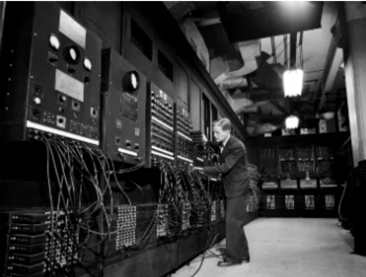
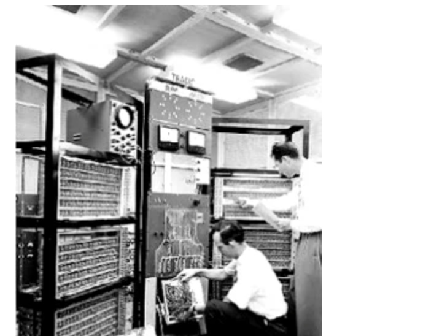
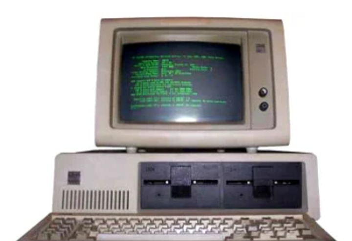
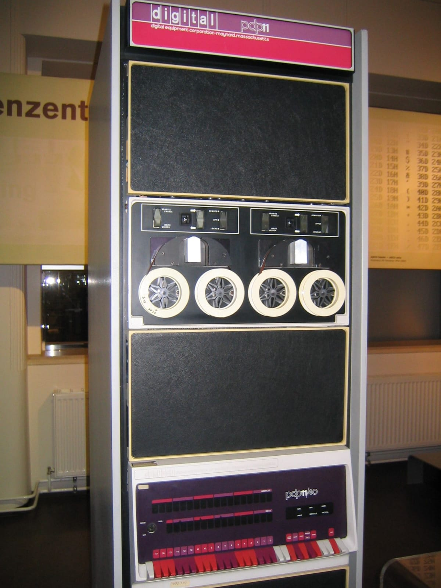
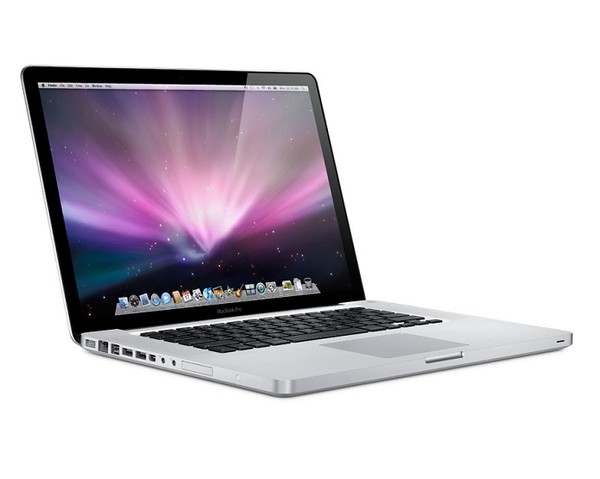
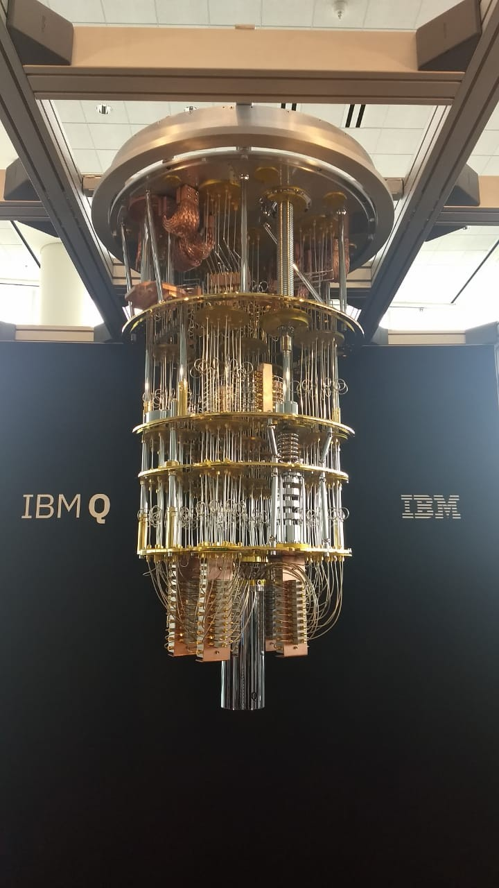

Sobre os computadores
O termo arquitetura é principalmente utilizado na construção e decoração de edificações. Ele diz respeito à forma e a estrutura de uma construção. O termo refere-se à arte ou a técnica de projetar e edificar o ambiente habitado pelo ser humano. Na computação o termo foi adaptado para denominar a técnica (talvez até a arte também) de projetar e construir computadores.
Porque estudar computadores
É essencial que todos profissionais da Computação tenham pelo menos conhecimentos básicos de Arquitetura de Computadores. Saber como o computador funciona nos permitirá entender sua capacidade (e incapacidade) de resolver problemas, sobre como programá-los da melhor forma possível, como deixar o computador e os dados contidos neles mais seguros, como ganhar desempenho e o que faz ele ficar tão lento às vezes. Então, estudar Arquitetura de Computadores é tão importante

Os computadores de primeira geração funcionavam por meio de circuitos e válvulas eletrônicas.
Possuíam o
uso restrito, além de serem imensos e consumirem muita energia.
Primeira Geração (1951-1959)
Os computadores de primeira geração funcionavam por meio de circuitos e válvulas eletrônicas.
Possuíam o
uso restrito, além de serem imensos e consumirem muita energia.
Um exemplo é o ENIAC (Eletronic Numerical Integrator and Computer) que consumia cerca de 200
quilowatts e possuía 19.000 válvulas.

Segunda Geração (1959-1965)
Ainda com dimensões muito grandes, os computadores da segunda geração funcionavam por meio de transistores, os quais substituíram as válvulas que eram maiores e mais lentas. Nesse período já começam a se espalhar o uso comercial.

Os computadores da terceira geração funcionavam por circuitos integrados. Esses substituíram os
transistores e já apresentavam uma dimensão menor e maior capacidade de processamento.
Terceira Geração (1965-1975)
Os computadores da terceira geração funcionavam por circuitos integrados. Esses substituíram os
transistores e já apresentavam uma dimensão menor e maior capacidade de processamento.
Foi nesse período que os chips foram criados e a utilização de computadores
pessoais começou.

Quarta Geração (1971-1980)
Os computadores de quarta geração utilizadas de forma Very Large Scale Integrated (VLSI) circuitos. Circuitos VLSI ter cerca de 5.000 transistores e de outros elementos de circuito e os seus associados os circuitos em um único chip, é possível que os microcomputadores de quarta geração.

Quinta Geração (1980 até os dias atuais)
Na quinta geração, a tecnologia VLSI se tornou a tecnologia ULSI (Ultra Large Scale Integration), gerada na produção de chips microprocessadores tendo dez milhões de componentes eletrônicos. Esta geração é baseada em hardware de processamento paralelo e software IA (Inteligência Artificial)
